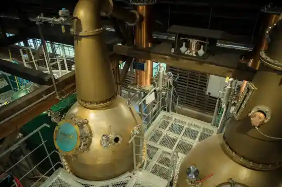
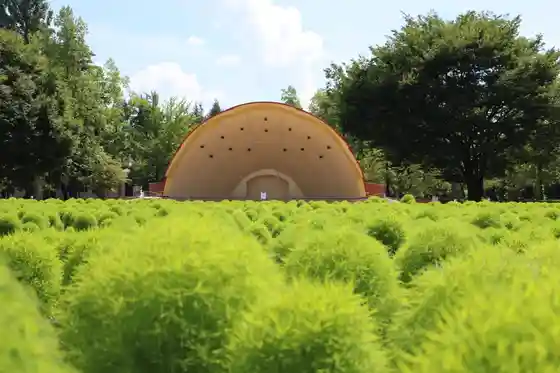
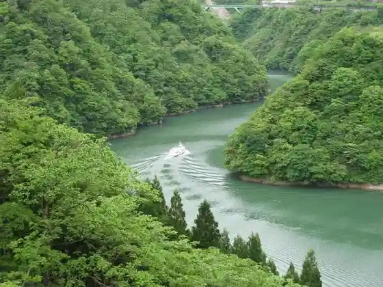
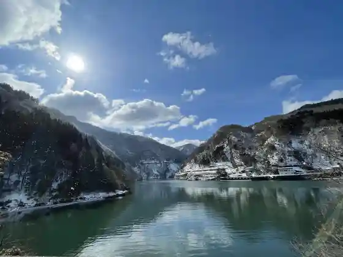

Saburomaru Joryujo (Wakatsuru Shuzo)
Tonami, Toyama · Official / source link

Tonami Churippu Park Kokia no Ohana Dan
Tonami, Toyama · 0763-33-1397 · Official / source link

Shogawa Kyo
Tonami, Toyama · 0763-33-1397 · Official / source link

Shogawa Onsen Sato
Tonami, Toyama · 0763-82-5696 · Official / source link

Shogawa Kyo Yuransen
Tonami, Toyama · 0763-82-0220 · Official / source link
Sankyo Village Lookout / Viewpoint Plaza
Tonami, Toyama · 0763-33-1397 · Official / source link
Okaki Tokoro O Ka Kura (O Ka Kura Museum Heisetsu)
Tonami, Toyama · 0763-33-6560 · Official / source link
Churippu Shiki Sai Kan
Tonami, Toyama · 0763-33-7716 · Official / source link
Roadside Station Tonami
Tonami, Toyama · 0763-33-7666 · Official / source link
Tonami Churippufea
Tonami, Toyama · 0763-33-7716 · Official / source link
Masuyama Castle Ruins
Tonami, Toyama · 0763-33-1602 · Official / source link
Noka Resutoran Daimon
Tonami, Toyama · 0763-33-0088 · Official / source link
Joryujo Kengaku Tour (Saburomaru Joryujo)
Tonami, Toyama · Official / source link
Tonami Sachi Zushi
Tonami, Toyama · 0763-33-5039 · Official / source link
Torigoe no Yado Sanraku Sono
Tonami, Toyama · 0763-82-1260 · Official / source link
Shokusai In Tokoro Hiko Hiko Tei
Tonami, Toyama · 0763-32-7223 · Official / source link
Tonami Kamiwada Ryokuchi Campground
Tonami, Toyama · 0763-37-1580 · Official / source link
Shogawa Great Buddha
Tonami, Toyama · 0763-33-1397 · Official / source link
Roadside Station Shogawa
Tonami, Toyama · 0763-82-7779 · Official / source link
Komaki Dam
Tonami, Toyama · 0763-33-1397 · Official / source link
Jun Sai Irori Chaya (Ayu no Sho)
Tonami, Toyama · 0763-82-0257 · Official / source link
Hokuriku Koka · Korapurodakutsu Tonami Kojo
Tonami, Toyama · 0763-37-8159 · Official / source link
Kenmin Park Rai Sei Forest
Tonami, Toyama · 0763-37-1540 · Official / source link
Kansei Sannen Suigetsuro Hotel
Tonami, Toyama · 0763-32-2054 · Official / source link
Yume no Taira Kosumosu So
Tonami, Toyama · 0763-37-2323 · Official / source link
Shogawa Mizu Memorial Park (Shogawa Uddo Plaza)
Tonami, Toyama · 0763-82-5696 · Official / source link
Tonami Art Museum
Tonami, Toyama · 0763-32-1001 · Official / source link
Uri Retsu Shimizu
Tonami, Toyama · 0763-33-1397 · Official / source link
Ayu Ryori no Mise Ayu Village
Tonami, Toyama · 0763-82-7110 · Official / source link
Tonami Yume no Taira Ski Area
Tonami, Toyama · 0763-37-1575 · Official / source link
Tonami no Shogawa So Ichiman Tei
Tonami, Toyama · 0763-82-5111 · Official / source link
Ka Aji Kokoro Iori Choja (Kyu, Farm Kafe Noko Bo Choja)
Tonami, Toyama · 0763-32-6862 · Official / source link
Tonami Sankyo Village Museum
Tonami, Toyama · 0763-34-7180 · Official / source link
Kumiko Saiku Experience (Kawashima Tategu)
Tonami, Toyama · 0763-32-0105 · Official / source link
Etchu Sansuke Yaki Kamamoto
Tonami, Toyama · 0763-37-0126 · Official / source link
Ayu Ryori Senmonten Ayu Ya
Tonami, Toyama · 0763-82-6661 · Official / source link
Wa Dan Shoku Kan Nenrin
Tonami, Toyama · 0763-23-6170 · Official / source link
Shogawa Onsen Furyu Aji Michi Zashiki Yumetsuzuri
Tonami, Toyama · 0763-82-1253 · Official / source link
Kawashima Tategu
Tonami, Toyama · 0763-32-0105 · Official / source link
O Shokuji Tokoro Kokorozashi Ge no
Tonami, Toyama · 0763-32-2241 · Official / source link
Sutekihausu Puromunado Momiji
Tonami, Toyama · 0763-23-4388 · Official / source link
Hitohada no Yado Kawa Kin
Tonami, Toyama · Official / source link
Watashi to Ichigo
Tonami, Toyama · 0763-33-2805 · Official / source link
Takasu Tobu Shishi Mai
Tonami, Toyama · Official / source link
Miyako Hisashi Shi
Tonami, Toyama · 0763-32-5122 · Official / source link
Kisetsu Ryori Tetsu
Tonami, Toyama · 0763-33-7171 · Official / source link
Benzaiten Park
Tonami, Toyama · 0763-33-1111 · Official / source link
Rakudo Iori
Tonami, Toyama · 0763-77-3315 · Official / source link
Gen Sho Tera
Tonami, Toyama · 0763-37-0007 · Official / source link
Tonami Local History Museum
Tonami, Toyama · 0763-32-2339 · Official / source link
Shogawa Seiryu Park
Tonami, Toyama · 0763-82-5353 · Official / source link
Noji Kumiai Hojin Gaia Tonami
Tonami, Toyama · 0763-33-2805 · Official / source link
Shinmei Ya
Tonami, Toyama · 0763-55-6348 · Official / source link
Matsukawa Jo Teibo to Akamatsu Namiki
Tonami, Toyama · 0763-33-1609 · Official / source link
Manpukuji Yamato
Tonami, Toyama · 0763-32-2717 · Official / source link
Yoroi Kabe
Tonami, Toyama · 0763-33-1111 · Official / source link
Tonami Saburomaru Ta Matsuri Andon
Tonami, Toyama · Official / source link
Hotel Terao Onsen
Tonami, Toyama · 0261-75-5155 · Official / source link
Yogashi Kissa Shatore
Tonami, Toyama · 0763-32-1464 · Official / source link
19 HITOYASUMI
Tonami, Toyama · 0763-58-5110 · Official / source link
Nagao Tamekage no Tsuka
Tonami, Toyama · 0763-33-1609 · Official / source link
Basho Kuhi
Tonami, Toyama · 0763-32-2772 · Official / source link
Merukyuru Toyama Tonami Resort & Supa
Tonami, Toyama · 0763-37-2000 · Official / source link
Wafu Hall
Tonami, Toyama · 0763-32-2201 · Official / source link
Apa Hotel (Tonami Ekimae)
Tonami, Toyama · 0570-014-411 · Official / source link
Tourist Farm Umeka no O Niwa
Tonami, Toyama · 0763-82-7021 · Official / source link
COFFEE LOUNGE Manderin
Tonami, Toyama · 0763-32-9786 · Official / source link
Kugyo Kyu Nin Tsuka
Tonami, Toyama · 0763-33-1609 · Official / source link
Shogawa Mizu Museum
Tonami, Toyama · 0763-82-3373 · Official / source link
Matsu Village Sotojiro Kinen Shogawa Art Museum
Tonami, Toyama · 0763-82-3373 · Official / source link
Jun Sai no Ibuki Heri Sora
Tonami, Toyama · 0763-23-6399 · Official / source link
Kawa Nabe
Tonami, Toyama · 0763-33-5632 · Official / source link
Otate Yama no Yakatato
Tonami, Toyama · 0763-33-1609 · Official / source link
Matabe Shimizu
Tonami, Toyama · 0763-33-1609 · Official / source link
Saigyo Kahi
Tonami, Toyama · 0763-33-1609 · Official / source link
Osuteria ACQUA FRESCA
Tonami, Toyama · 0763-33-3877 · Official / source link
Tonami Yakusho
Tonami, Toyama · 0763-33-1111 · Official / source link